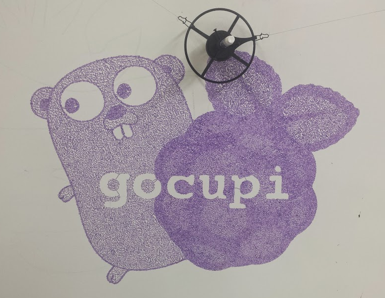
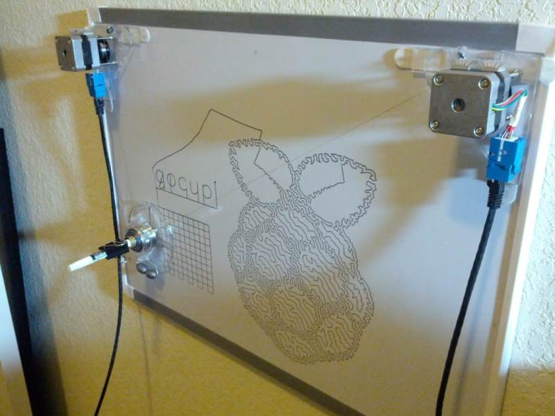
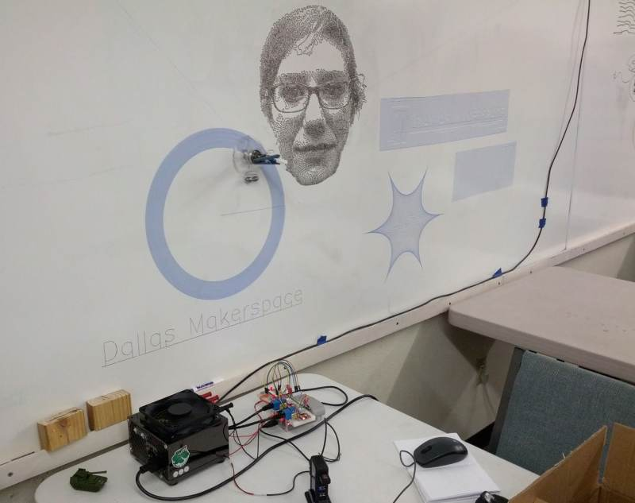
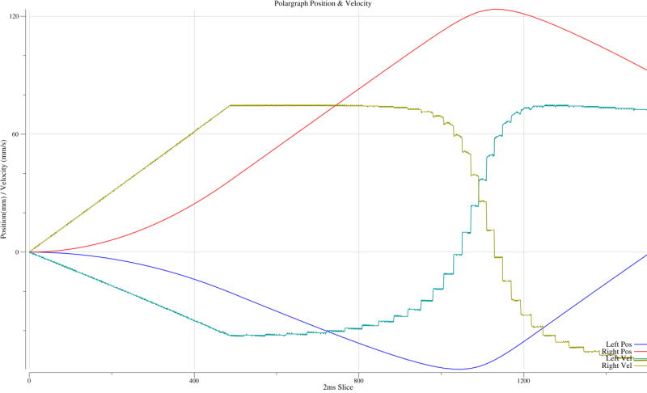
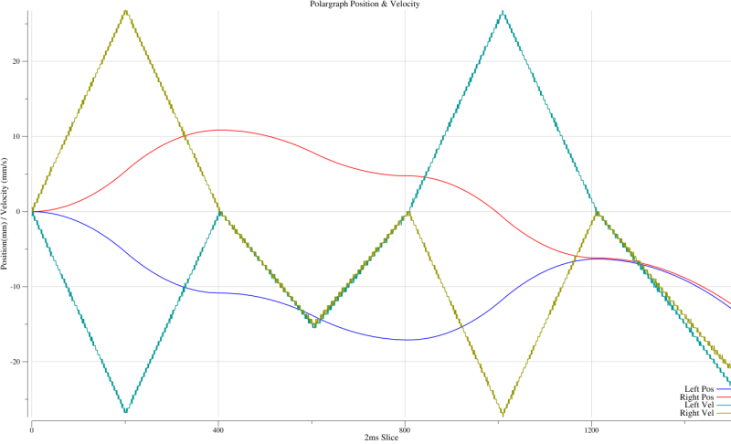

Polargraph (vertical plotter / drawing machine) written in Go. Inspired by Polargraph and drawbot projects, designed with the help of the Dallas Makerspace
Gocupi is different from existing systems in that it uses a Raspberry Pi to do most of the processing instead of relying on a microcontroller to parse commands. This gives it the ability to render complex svg files and patterns that would not fit in memory on a microcontroller.
 
Get your own Gocupi
A kickstarter campaign will be starting soon to allow you to get a prebuilt Gocupi. More information will be available at gocupi.com
What is a polargraph?
Two stepper motors move a pen hanging from threads to draw stuff out on a whiteboard or any vertical surface. A program written in Go runs on the Pi, it sends movement commands over serial to an arduino, which then pulses the step pin on the stepper drivers to make the stepper motors move.
This project is different from most other Polargraphs in that there is no step generation code on the arduino, everything is calculated in Go and then the arduino just receives a stream of step deltas that it stores in a memory buffer and then executes. Since all logic is written in Go running on the Pi it allows using more advanced interpolation models for smooth drawing, not needing to use fixed point or single precision floats for calculations, not needing to reflash the arduino often when making code changes, etc.
Design description
In the Go program, there are several channels that form a pipeline where separate functions execute the different pipeline stages. All of the stages are run in different goroutines so that they execute concurrently.
- The first stage in the pipeline is generating X,Y coordinates, it can either read those points from an svg file, gcode file, mouse data, or generate them according to an algorithm(such as hilbert space filling curve, spiral, circle, parabolic graph, etc).
- The second stage takes an X,Y coordinate and interpolates the movement from the previous X,Y position to the new position by evaluating the pen position every 2 milliseconds. It takes into account acceleration, entry speed, and exit speed so that it can slow down the pen smoothly before the end of the current line segment if needed. It calculates how much the stepper motors need to turn to move the pen to the interpolated X,Y location over those 2 milliseconds.
- The final stage takes the step commands and writes them over serial to the arduino. The arduino first sends a byte requesting a certain amount of data when the buffer has enough room, then the raspberry pi sends that much data to the arduino.
- The arduino has a 1KB buffer of step commands and uses simple linear interpolation to see if it should generate a pulse at the current time to move the stepper motor one step in a particular direction.
In order to generate single line art drawings(like the raspberry pi & gopher logo shown above) I followed the makerbot and eggbot tutorials which show how to convert a grayscale image to a stippled image to a path to an svg file.
Interpolation
The system uses simple trapezoid based velocity to move the gondola smoothly. During interpolation there are three phases, acceleration at a constant rate, cruising at a constant speed, and decelerating at a constant rate. It handles the edge cases where you don't have enough distance to accelerate or decelerate fully.
For each line segment it is about to draw it calculates the angle turn at the end of the segment to the next line segment to determine the target exit speed. Ie if it has to make a 90 degree turn, then it wants to come to a stop at the end of the current line segment, if it isn't turning and just going straight then it doesn't need to slow down at all.

In that chart you can see the constant acceleration phase as velocity is increasing, and then the velocity of the pen in the cartesian coordinate system is constant. The reason for the steps in velocity is because of the instantaneous changes in direction between line segments. Even though it does slow down to make a turn it does not stop completly for every turn.

In this chart there is not enough distance to reach the target velocity, so there is only an acceleration and then deceleration phase. It is making 90 degree turns, that is why the velocity goes to 0 between each line segment. The thickness of the velocity lines is due to the limited resolution of the stepper motors, which are running at 1/8 microsteps, and the arduino interpolates to a precision of 1/32 of a microstep.